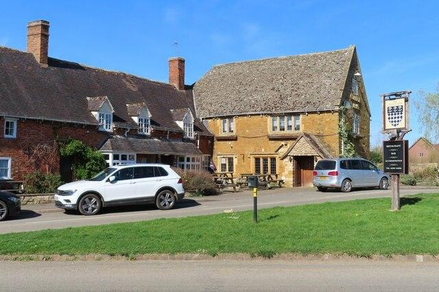
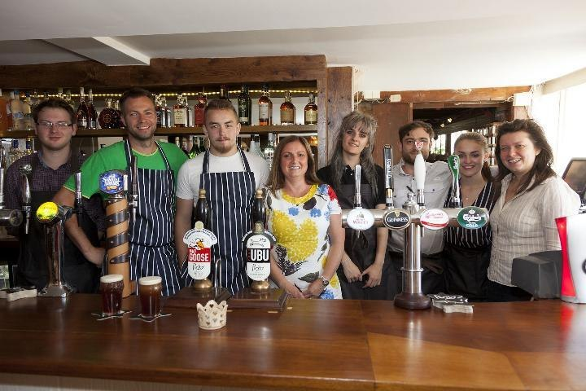

Our Story
Every great village pub has a story. Ours is written into the very walls.
A landmark on the village green.
The College Arms occupies a Grade II listed building, with historic stone and brick sections that reflect centuries of village life.
Once a farmhouse, the building became a public house around the end of the nineteenth century. The pub takes its name from Magdalen College, Oxford, which held land in Quinton for generations.
The Magdalen College arms on the traditional hanging sign are a particularly distinctive part of the pub's story.


At the heart of Quinton.
Set beside the village green, the College Arms has the character and familiarity of a traditional country pub.
Whether you're a local or exploring the Warwickshire countryside, come and discover the pub for yourself.
Come and find usA pub made by people.
Through the years, The College Arms has welcomed locals and visitors alike, with generations of publicans and teams making the village pub their own.
See our latest news